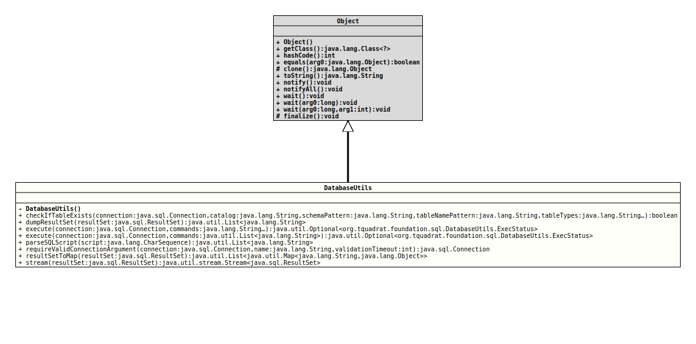

Several utilities for the work with databases that will be accessed through plain JDBC.
- Author:
- Thomas Thrien (thomas.thrien@tquadrat.org)
- Version:
- $Id: DatabaseUtils.java 1105 2024-02-28 12:58:46Z tquadrat $
- Since:
- 0.1.0
- UML Diagram
-

UML Diagram for "org.tquadrat.foundation.sql.DatabaseUtils"
{kind=link}
-
Nested Class Summary
Nested ClassesModifier and TypeClassDescriptionstatic final recordInstances of this class are used to return the status of a call toexecute(Connection,String...). -
Constructor Summary
Constructors -
Method Summary
Modifier and TypeMethodDescriptionstatic final booleancheckIfTableExists(Connection connection, String catalog, String schemaPattern, String tableNamePattern, String... tableTypes) Checks whether the table, that is specified by itscatalog, schema (throughschemaPattern) andtableNamePattern, exists.dumpResultSet(ResultSet resultSet) Dumps the given result set to aListof Strings.static final Optional<DatabaseUtils.ExecStatus> execute(Connection connection, String... commands) Executes the given list of commands on the given database connection.static final Optional<DatabaseUtils.ExecStatus> execute(Connection connection, List<String> commands) Executes the given list of commands on the given database connection.parseSQLScript(CharSequence script) Parses the given SQL script.static final ConnectionrequireValidConnectionArgument(Connection connection, String name, int validationTimeout) This method checks whether the given connection is notnulland that it is open.resultSetToMap(ResultSet resultSet) Reads the records from the givenResultSetto aMapthat uses the column labels as key and stores these to aList.
-
Constructor Details
-
DatabaseUtils
private DatabaseUtils()No instance allowed for this class.
-
-
Method Details
-
checkIfTableExists
public static final boolean checkIfTableExists(Connection connection, String catalog, String schemaPattern, String tableNamePattern, String... tableTypes) throws SQLException Checks whether the table, that is specified by its
catalog, schema (throughschemaPattern) andtableNamePattern, exists.Where a pattern is allowed, the wildcards "%" and "_" can be used.
This method works for any RDBMS.
- Parameters:
connection- The connection to the database.catalog- A catalog name; it must match the catalog name as it is stored in the database. The empty String retrieves those tables without a catalog, andnullmeans that the catalog name should not be used to narrow the search.schemaPattern- A schema name pattern; it must match the schema name as it is stored in the database. The empty String retrieves those tables without a schema, andnullmeans that the schema name should not be used to narrow the search.tableNamePattern- A table name pattern; it must match the table name as it is stored in the database.tableTypes- A list of table types, which must be from the list of table types returned fromDatabaseMetaData.getTableTypes(), to include. It can be omitted to return all types.- Returns:
trueif the specified table exists,falseotherwise.- Throws:
SQLException- A database access error occurred.
-
dumpResultSet
@API(status=STABLE, since="0.4.1") public static final List<String> dumpResultSet(ResultSet resultSet) throws SQLException Dumps the given result set to aListof Strings.- Parameters:
resultSet- The result set to dump.- Returns:
- The contents of the result set.
- Throws:
SQLException- Something went wrong when reading the result set.- Since:
- 0.4.1
-
execute
@API(status=STABLE, since="0.0.1") public static final Optional<DatabaseUtils.ExecStatus> execute(Connection connection, String... commands) Executes the given list of commands on the given database connection.
The commands should be DDL or DML commands, not queries. If all commands were executed successfully, the method calls
commit()on the provided connection, otherwise a call torollback()is issued. In case, the connection is configured for AutoCommit, neither call will be made.In case of an error, the return value is not empty.
Empty commands and commands that will start with a hash ("
#") will be ignored; this allows to process script files without extensive reformatting. -
execute
@API(status=STABLE, since="0.1.0") public static final Optional<DatabaseUtils.ExecStatus> execute(Connection connection, List<String> commands) Executes the given list of commands on the given database connection.
The commands should be DDL or DML commands, not queries. If all commands were executed successfully, the method calls
commit()on the provided connection, otherwise a call torollback()is issued. In case, the connection is configured for AutoCommit, neither call will be made.In case of an error, the return value is not empty.
Empty commands will be silently ignored.
-
parseSQLScript
@API(status=STABLE, since="0.0.1") public static final List<String> parseSQLScript(CharSequence script) Parses the given SQL script.
Basically, the method splits the provided String into the single commands (they are separated by semicolon ";"), and returns them as a
Listthat can be used withexecute(Connection, List).Text between "--" (two hyphens, -) and the end of the line will be seen as a comment and is ignored; same for comments between "/*" and "*/".
- Parameters:
script- The script.- Returns:
- The separated commands.
-
requireValidConnectionArgument
@API(status=STABLE, since="0.4.1") public static final Connection requireValidConnectionArgument(Connection connection, String name, int validationTimeout) throws ValidationException This method checks whether the given connection is not
nulland that it is open. Otherwise it will throw aValidationException.This method will test the method by calling
Connection.isValid(int).- Parameters:
connection- The connection to check; can benull.name- The name of the argument; this is used for the error message.validationTimeout- The validation timeout in seconds, with -1 for no validation (in this case, onlyConnection.isClosed()is called); a value of 0 means no timeout.- Returns:
- The value if the validation succeeds.
- Throws:
ValidationException- The connection is closed or otherwise not valid.NullArgumentException-nameor the connection isnull.EmptyArgumentException-nameis the empty String.- Since:
- 0.4.1
-
resultSetToMap
@API(status=STABLE, since="0.4.1") public static final List<Map<String,Object>> resultSetToMap(ResultSet resultSet) throws SQLException Reads the records from the givenResultSetto aMapthat uses the column labels as key and stores these to aList.- Parameters:
resultSet- The result set to dump.- Returns:
- The contents of the result set; maybe empty, but will never be
null. - Throws:
SQLException- Something went wrong when reading the result set.- Since:
- 0.4.1
-
stream
@API(status=STABLE, since="0.0.1") public static final Stream<ResultSet> stream(ResultSet resultSet) Returns a
Streamimplementation for the givenResultSet.Several operations on a
ResultSetinstance will not work when called on the streamed instance.When one of the operations that would move the cursor is called on the
ResultSetinstance that is pushed into an operation on the stream, anUnsupportedOperationExceptionis thrown; this affects the methodsResultSet.absolute(int)ResultSet.afterLast()ResultSet.beforeFirst()ResultSet.first()ResultSet.last()ResultSet.moveToCurrentRow()ResultSet.moveToInsertRow()ResultSet.next()ResultSet.previous()ResultSet.relative(int)
as well as the following methods:
ResultSet.close()ResultSet.deleteRow()ResultSet.insertRow()ResultSet.setFetchDirection(int)ResultSet.setFetchSize(int)
A call to
BaseStream.close()does not close theResultSet!- Parameters:
resultSet- The result set to stream on.- Returns:
- The stream.
-